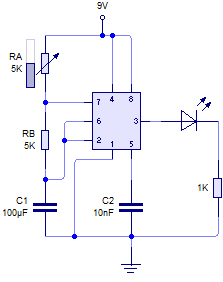

Ejercicio 1: Tiempo de Encendido del LED (TON)
Formulas - Figura 1: MV Astable con D.C. > 50%
TOFF = 0,693 · RB · C1
f = 1,44 / ((RA + 2·RB) · C1)
D = (RA + RB) / (RA + 2·RB)

50%" title="Figura 1: MV Astable con D.C. > 50%" class="circuit-diagram">Solucion: 0,693 s.
1. Identificar la formula aplicable
Para la Figura 1 (MV Astable con D.C. > 50%, sin diodo), el tiempo que el LED permanece encendido corresponde al tiempo de carga del condensador. Durante la carga, la corriente fluye desde VCC a traves de RA y RB en serie hasta el condensador C1:
La constante 0,693 proviene de ln(2), ya que el condensador se carga desde 1/3 hasta 2/3 de VCC.
2. Identificar los valores del circuito
Del diagrama de la Figura 1, con el potenciometro en su posicion inicial (50%):
RB = 5 kΩ = 5 × 103 Ω
C1 = 100 µF = 100 × 10-6 F
3. Sustituir en la formula
TON = 0,693 · (5 kΩ + 5 kΩ) · 100 µF
TON = 0,693 · 10 kΩ · 100 µF
TON = 0,693 · 10 × 103 · 100 × 10-6
TON = 0,693 · 104 × 10-4
TON = 0,693 · 1
TON = 0,693 s
4. Interpretacion del resultado
El LED permanece encendido durante aproximadamente 0,693 segundos en cada ciclo completo de oscilacion. Este tiempo corresponde a la fase de carga del condensador C1 a traves de RA + RB, durante la cual la salida del 555 (pin 3) se encuentra en estado alto (HIGH), alimentando al LED a traves de la resistencia de 1 kΩ.